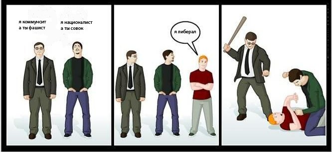

Карл Маркс о России
Из его книги "Разоблачения дипломатической истории XVIII века"
http://proxy.flibusta.is/b/385152
"Эта работа не вошла ни в одно собрание сочинений Маркса на русском языке. И хотя она была переведена еще в 50-е годы, впервые на русском языке была опубликована лишь в 1989 году в нескольких номерах журнала "Вопросы истории" и с тех нигде не переиздавалось. Причина запрета на публикацию "Разоблачений..." - это содержание четвертой главы этой работы, где содержатся крайне нелестные отзывы о России и ее правителях, а так же политике имперской экспансии России. Выводы Маркса слишком сильно противоречили великодержавной, патриотической концепции истории, которую вбивала в головы людей советская бюрократия".
А я скажу иначе: тут важнее другое: то, что в России назначали Истиной (с истинной религиозным рвением) писания Маркса, который, вообще-то, был русофобом. России нужен русский социализм, а не марксистский коммунизм!
"Подведем итог. Московия была воспитана и выросла в ужасной и гнусной школе монгольского рабства. Она усилилась только благодаря тому, что стала virtuoso (виртуозной (итал.). Ред) в искусстве рабства. Даже после своего освобождения Московия продолжала играть свою традиционную роль раба, ставшего господином. Впоследствии Петр Великий сочетал политическое искусство монгольского раба с гордыми стремлениями монгольского властелина, которому Чингисхан завещал осуществить свой план завоевания мира".
Если кто в курсе подобного -- то накидайте пруфов, PLZ, можно сделать полезную подборку. Но аккуратно, именно на первоисточниках, а то есть передёргивания. Впрочем, есть и демагогические "опровержения" якобы "передёргиываний" :-)
Есть такая цитата:
«Само название Русь узурпирована москалитами. Русские не только не являются славянами, но даже не принадлежат к индо-европейской расе. Они пришельцы, которых надо выгнать обратно за Днепр.... Я хотел бы, чтобы этот взгляд стал преобладающим среди славян» К. Маркс, Ф. Энгельс (Сочинения, том 31, Москва, 1963).
Но оровергатели русофобии Маркса указывают на то, что это -- пересказ книги Элиаса Реньо «Европейский вопрос, ошибочно называемый польским вопросом»: "догма Лапинского, будто великороссы не славяне, отстаивается г-ном Духинским (из Киева, профессор в Париже)". Ну и далее:
"ВЫВОДЫ, К КОТОРЫМ ПРИХОДИТ ДУХИНСКИЙ: название Русь узурпировано московитами. Они не славяне и вообще не принадлежат к индогерманской расе, они intrus (незаконно вторгшиеся), которых требуется опять прогнать за Днепр и т. д.".
Казалось бы -- ура, разоблачили клеветников на светлое имя великого гения! В статье, "разоблачающей разоблачения", радостно написано: "Как видно и здесь все переврали. Понятно, что тот, у кого вы скопировали эти «цитаты» - моральный ублюдок. Но и сами не торопитесь доверять – проверяйте!".
Верно, замечательно, ваще прельстиво до плеши (с), но вот есть нюанс: в цитате, приведённой в этом самом "разоблачении", после выводов Духинского написано: "Я бы хотел, чтобы Духинский оказался прав" (К.Маркс. Соч., т. 31. с. с. 106-107). Oops (c) L.Laffer
И не надо отмазок вида "дело не в русских, а в той политике, которую проводила Российская империя в то время" -- об этом никаких уточнений. И сов жалко, и глобусы отмывать приходится. И, ничтоже сумяшеся, тут же:
«Славяне — мы еще раз напоминаем, что при этом мы всегда исключаем поляков, — постоянно служили как раз главным орудием контрреволюции. Угнетаемые дома, они вовне, всюду, куда простиралось славянское влияние, были угнетателями всех революционных наций».
Ещё немного цитат, пруфы не проверял. Обратите внимание, что везде речь идёт именно о народе, а не о правительстве и т.д.:
«На сентиментальные фразы о братстве, обращаемые к нам от имени самых контрреволюционных наций Европы, мы отвечаем: ненависть к русским была и продолжает еще быть у немцев их первой революционной страстью; со времени революции к этому прибавилась ненависть к чехам и хорватам, и только при помощи самого решительного терроризма против этих славянских народов можем мы совместно с поляками и мадьярами оградить революцию от опасности. Мы знаем теперь, где сконцентрированы враги революции: в России и в славянских областях Австрии; и никакие фразы и указания на неопределенное демократическое будущее этих стран не помешают нам относиться к нашим врагам, как к врагам» (Ф. Энгельс.Демократический панславизм. Соч., т. 6, с. 305-306.)
В 1882 году Энгельс откровенничал Каутскому: «Вы могли бы спросить меня, неужели я не питаю никакой симпатии к славянским народам? В самом деле – чертовски мало». А вот ещё поразительные признания «товарища» Энгельса: «Необходима безжалостная борьба не на жизнь, а на смерть с предательским по отношению к революции славянством… – истребительная война и безудержный террор».
Статья Энгельса в английской газете «Commonwealth»: «Право больших национальных образований Европы на политическую независимость, признанное европейской демократией, относилось только к большим и чётко определённым историческим нациям Европы: это были Италия, Польша, Германия, Венгрия… Что же касается России, то её можно упомянуть лишь как владелицу громадного количества украденной собственности, которую ей придётся отдать назад в день расплаты».
Кстати, в этой же статье есть здравая мысль:
"Последнее замечание. Даже если Маркс и Энгельс были жуткими русофобами, с чего вы взяли, что это какое-то отношение имеет к большевикам? Большевики от ортодоксальных марксистов тем и отличаются, что являются творческими марксистами. То есть плевать хотели на Маркса, когда есть противоречие интересам России или делу. Сами большевики критиковали М.и Э. будь здоров. Ведь всем понятно, что человеку свойственно ошибаться, особенно в политических вопросах".
Я, правда, не припоминаю, чтобы большевики критиковали М.и Э. Но идея верная: нефиг зацикливаться на догме марксизма, требуется развитие. Максимально разумно развитие внутренней политики осуществлял И.В. Сталин, но не успел довести дело до конца. Я против утопии коммунизма и за социализм (разумный, национальный, а не по Марксу/Энгельсу/Ленину), и отмечу, что из тех, кому всё же нравится эта утопия, вполне можно иметь дело именно с, условно говоря, сталинистами, которые понимают разницу между теоретическими идеалами теории и практической необходимостью. Как некогда было очень верно сказано: из коммуниста может получиться национал-социалист (для профилактики: не путать с нацизмом), а вот из либерала -- никогда.

2016